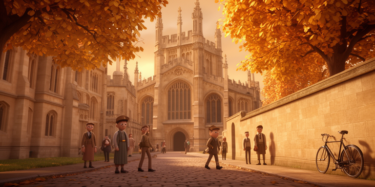
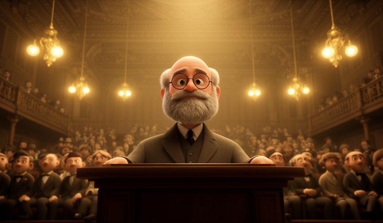
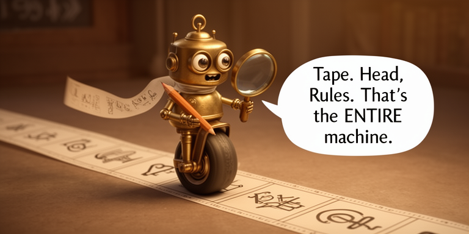
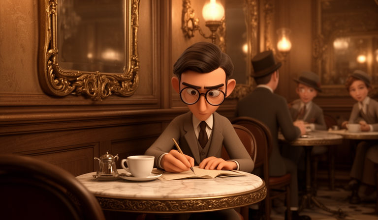

From Turing to LLMs and Beyond
Full 3D — Style Experiment
Issue 1 scenes rendered in full 3D animated style
Scribble Hero

Cambridge
Turing

Hilbert

Scribble Tape
Meta Moment

Vienna Cafe
Scribble Ride